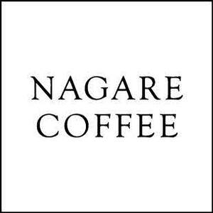

Trade Mark Journal No.2025/024 13 June 2025
UK00004207475 22 May 2025 (21,25,30,35,43)

- Class 21
- Coffee mugs; Coffee cups; Non-electric coffee drippers for brewing coffee; Coffee stirrers; Coffee grinders; Coffee pots; Coffee scoops; Coffee percolators, non-electric; Non-electric coffee percolators; Percolators (Coffee -), non-electric; Coffee filters not of paper being part of non-electric coffee makers; Coffee filters, not of paper, being part of non-electric coffee makers; Coffee pots [non-electric]; Non-electric coffee pots; Vacuum coffee bean containers; Coffee services of ceramic; Coffee brewers (Non-electric -); Vacuum coffee makers; Coffee makers, non-electric; Non-electrical coffee grinders; Hand-operated coffee grinders; Coffee grinders, hand-operated; Non-electric coffee frothers; Tea cups; Coffee services of china; Coffee filters, non-electric; Pastry molds; Pastry bags; Pastry cutters.
- Class 25
- Clothing; Knitwear [clothing]; Jackets [clothing]; Ready-to-wear clothing; Woolen clothing; Garments for protecting clothing; Layettes [clothing]; Clothing layettes; Linen clothing; Headbands [clothing]; Headbands for clothing; Clothes; Aprons [clothing]; Denims [clothing]; Shorts [clothing]; Collars [clothing]; Parts of clothing, footwear and headgear; Knitted clothing; Veils [clothing]; Hoods [clothing]; Embroidered clothing; Casual clothing; Jackets (Stuff -) [clothing]; Bottoms [clothing]; Clothing for leisure wear; Infant clothing; Drawers [clothing]; Leisure clothing; Sports clothing; Clothing for children; Tops [clothing]; Beach clothing; Men's clothing.
- Class 30
- Coffee; Decaffeinated coffee; Iced coffee; Chocolate coffee; Coffee drinks; Coffee beans; Coffee beverages; Coffee (Unroasted -); Unroasted coffee; Caffeine-free coffee; Coffee extracts for use as substitutes for coffee; Coffee essences for use as substitutes for coffee; Coffee substitutes [artificial coffee or vegetable preparations for use as coffee]; Malt coffee; Coffee pods; Coffee beverages with milk; Flavoured coffee; Coffee bags; Unroasted coffee beans; Coffee capsules; Coffee flavorings; Roasted coffee beans; Instant coffee; Freeze-dried coffee; Coffee flavourings; Beverages with coffee base; Beverages with a coffee base; Coffee oils; Espresso; Coffee based drinks; Ground coffee; Coffee in whole-bean form; Beverages made from coffee; Beverages made of coffee; Coffee extracts; Drip bag coffee; Ground coffee beans; Coffee substitutes; Aerated drinks [with coffee, cocoa or chocolate base]; Coffee essences; Coffee based beverages; Mixtures of coffee; Coffee mixtures; Cappuccino; Coffee concentrates; Coffee in brewed form; Mixtures of coffee and chicory; Coffee, teas and cocoa and substitutes therefor; Mixtures of coffee essences and coffee extracts; Powdered coffee in drip bags; Ice beverages with a coffee base; Prepared coffee beverages; Coffee [roasted, powdered, granulated, or in drinks]; Chai tea; Tea; Tea beverages with milk; Chocolate bark containing ground coffee beans; Extracts of coffee for use as flavours in beverages; Bakery goods; Gluten-free bakery products; Chocolate fillings for bakery products; Pastries; Mixes for making bakery products; Macaroons [pastry]; Chocolate for confectionery and bread; Pastry; Preparations for making bakery products; Danish pastries; Viennese pastries; Dairy confectionery; Chocolate pastries; Flour confectionery; Frozen pastries; Confectionery; Pastries, cakes, tarts and biscuits (cookies); Almond pastries; Savory pastries; Frozen pastry; Confectionery chips for baking; Breads; Frozen dairy confections; Prepared desserts [pastries]; Vegan cakes; Chocolate confectionary; Croissants; Pastries with fruit; Fruit pastries; Gluten-free bread; Prepared desserts [confectionery]; Pastry dough; Cake doughs; Gluten-free pizza; Chocolate confectionery; Pizza flour; Truffles [confectionery]; Custards [baked desserts]; Frozen confectionery; Danish bread; Almond confectionery; Chocolate confectionery products; Confectionery chocolate products; Dough for cakes; Cakes; Pastry mixes; Flour for doughnuts; Pizza pies; Viennoiserie; Chocolate cakes; Bread doughs; Snack food products made from rusk flour; Fruit filled pastry products; Non-medicated flour confectionery; Danish bread rolls; Bread buns; Bread and buns; Breakfast cake; Sesame confectionery; Potato flour confectionery; Muesli desserts; Fruit confectionery; Custard-based fillings for cakes and pies; Cake flour; Bread biscuits; Pre-baked bread; Shortcrust pastry; Chocolate-based fillings for cakes and pies; Malt cakes; Ready-to-bake dough products; Baguettes; Cream cakes; Brioches; Frozen cakes; Chocolate confections; Frozen yogurt cakes; Confectionery ices; Cocoa-based ingredients for confectionery products; Bread; Cupcakes; Long-life pastry; Flour for baking; Frozen yogurt [confectionery ices]; Yogurt (Frozen -) [confectionery ices]; Nut confectionery; Marshmallow confectionery; Chocolate desserts; Cake dough; Non-medicated flour confections; Cake bars; Snack food products made from cereal flour; Cheesecakes.
- Class 35
- Retail services in relation to coffee; Shop window dressing; Shop window dressings; Merchandising; Product merchandising; Online retail store services relating to clothing; Retail services connected with the sale of clothing and clothing accessories; Retail of third-party pre-paid cards for the purchase of clothing; Online retail store services in relation to clothing; Promoting the sale of goods and services of others through promotional events; Retail store services in the field of clothing; Retail services in relation to clothing accessories; Advertising services relating to the sale of goods; Online retail services relating to clothing; Retail services relating to bakery products; Retail services via catalogues related to alcoholic beverages (except beer); Retail services in relation to stationery supplies; Retail services connected with the sale of furniture; Retail services in relation to fashion accessories; Retail services relating to furniture; Retail services in relation to baked goods; Retail services in relation to bakery products.
- Class 43
- Coffee shops; Coffee shop services; Coffee bar services; Cafe services; Café services; Cafés; Serving food and drink in Internet cafes; Bar and restaurant services; Restaurant and bar services; Bistro services; Take-away restaurant services; Serving food and drink in doughnut shops; Carvery restaurant services; Fast-food restaurant services; Hotel restaurant services; Providing food and drink in doughnut shops; Self-service restaurant services; Take-out restaurant services; Japanese restaurant services; Restaurant services; Restaurants (Self-service -); Self-service restaurants; Serving food and drink in restaurants and bars; Mobile restaurant services; Spanish restaurant services; Brasserie services; Restaurant services incorporating licensed bar facilities; Catering in fast-food cafeterias; Providing food and drink in restaurants and bars; Providing food and drink in bistros; Snack bar services; Tourist restaurants; Eateries; Delicatessens [restaurants]; Cocktail lounge buffets; Restaurants; Provision of food and drink in restaurants; Office catering services for the provision of coffee; Serving food and drink for guests in restaurants; Restaurant reservation services; Guesthouse; Restaurant services for the provision of fast food; Self-service cafeteria services; Take-away food and drink services; Booking of restaurant seats; Cocktail lounge services; Catering of food and drinks; Takeaway food and drink services; Beer bar services; Teahouse services; Food and drink catering; Catering of food and drink; Catering (Food and drink -); Tapas bars; Carry-out restaurants.
Nagare Coffee Limited